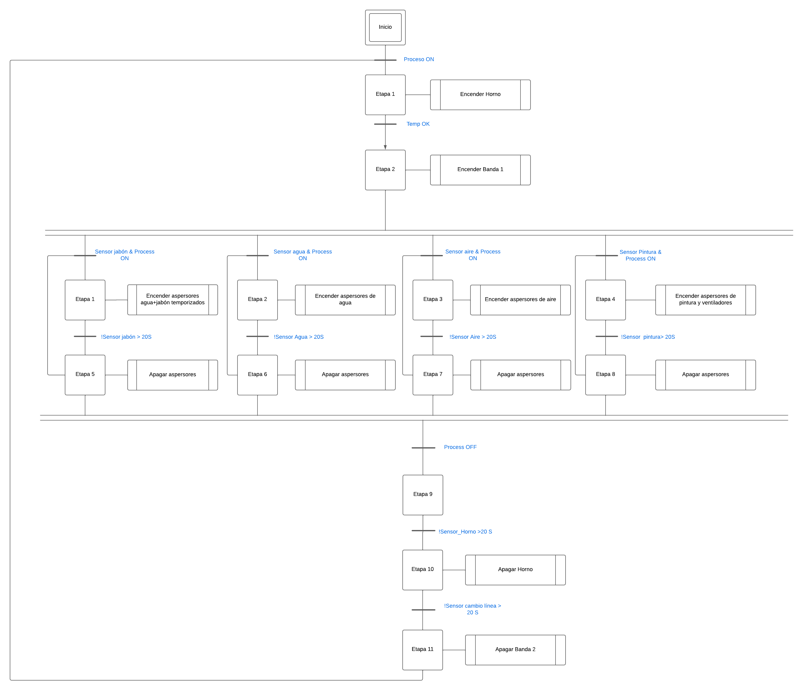
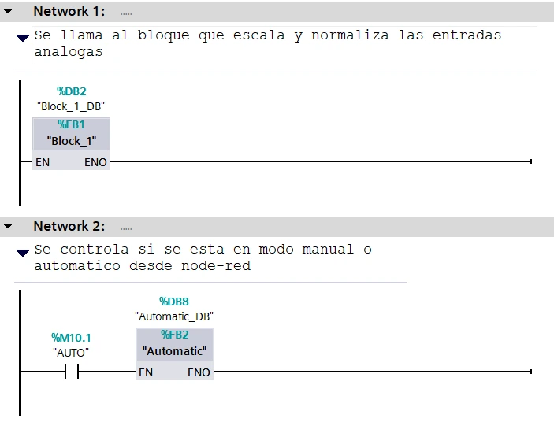
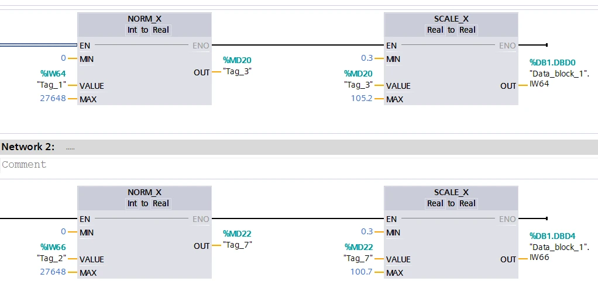
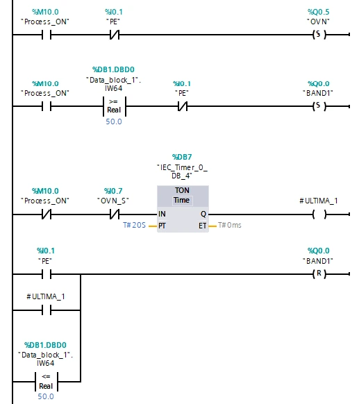
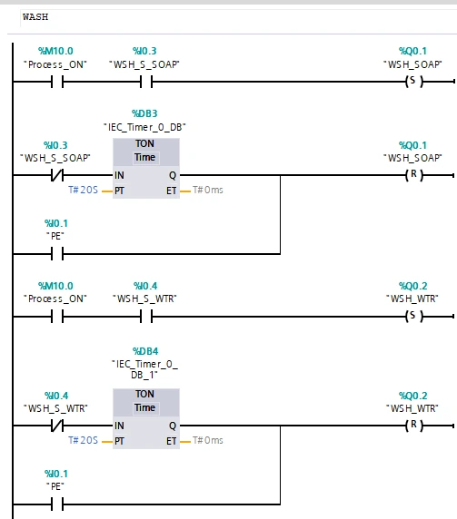
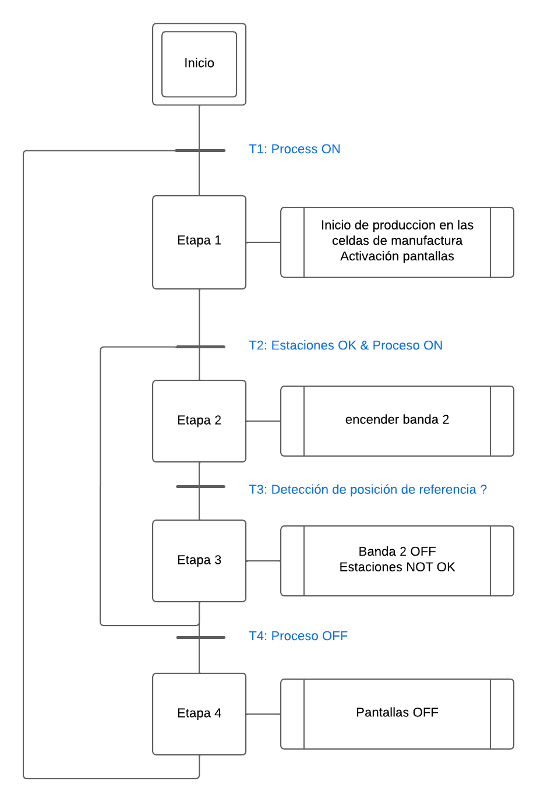

Para la sección de SCADA y controladores industriales, el proceso se desglosó en dos partes: una correspondiente
al
lavado y pintura de los marcos, y otra al ensamble de las bicicletas,
referenciadas como
parte 1 y parte 2, respectivamente.
La lógica de la parte 1 fue programada en un PLC S7-1200 de Siemens, mientras que la lógica de
la parte 2 se implementó en un
CompactLogix 5330 ERM de Allen-Bradley. Para permitir la comunicación entre ambos
controladores, se utilizaron
dos módulos SIMATIC IoT2040 ejecutando Node-RED. La comunicación se estableció
mediante
MQTT, permitiendo el intercambio de tags entre los dos sistemas.
Para el servidor MQTT (broker), se utilizó HiveMQ, desplegado en la nube a través de un
contenedor en AWS.
Los módulos IoT se suscribían a los tópicos correspondientes y enviaban la información a sus respectivos PLCs.
M7.1 Programación PLC SIEMENS S1200
Para la programación del controlador, se realizó un análisis por etapas (GRAFCET) del
subproceso.

El proceso inicia al encender el horno y esperar a que alcance el humbral de
precalentamiento adecuado.
Una vez cumplida esta condición (Transición 2), se enciende la banda 1,
iniciando el flujo de bicicletas.
Aparece una bifurcación AND con cuatro subprocesos paralelos (lavado y pintura). Para
optimizar los recursos, los actuadores se apagan automáticamente si detectan un slot vacío y
se mantienen así hasta que
vuelva a detectarse una bicicleta, alineándose con los principios de Lean Manufacturing.
Esta lógica se implementa en LADDER mediante subprocesos separados. El programa consta de:
MAIN
Automatic
Block_1 (variables analógicas)
En MAIN se procesan las entradas analógicas (IW64,
IW66) y se llama a
Automatic, habilitado desde el dashboard de Node-RED.

En Block_1 las variables analógicas se normalizan y escalan (0→100). Sus valores
se almacenan en una
base de datos accesible desde Node-RED.

El bloque Automatic contiene la rutina automática; energiza los actuadores según
las transiciones del GRAFCET.


M7.2 Programación PLC CompactLogix 5330
La segunda parte dispone de una línea principal de ensamble con varias
subestaciones. La banda solo avanza
cuando todas las estaciones reportan OK.
Cada estación cuenta con una botonera; la banda se detiene al llegar la bicicleta a la
posición de referencia.
La lógica se documentó en GRAFCET y se implementó en LADDER.
A continuación, el esquemático funcional del proceso:

Cada subestación incluye un monitor industrial que indica al operario el producto a ensamblar
y la producción restante.
Para más detalles, consulte el archivo .ACD (convenciones: T=transiciones,
E=estaciones, comunicación con
variador vía tags de Node-RED).